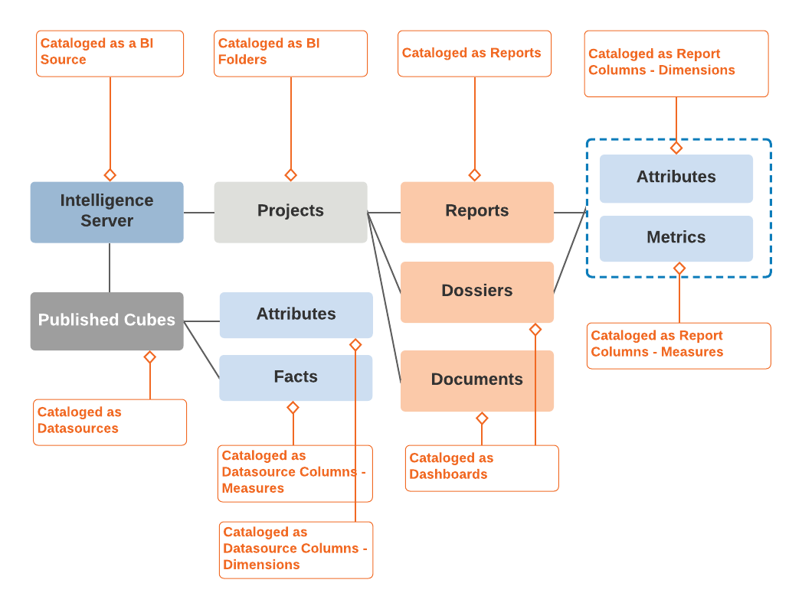
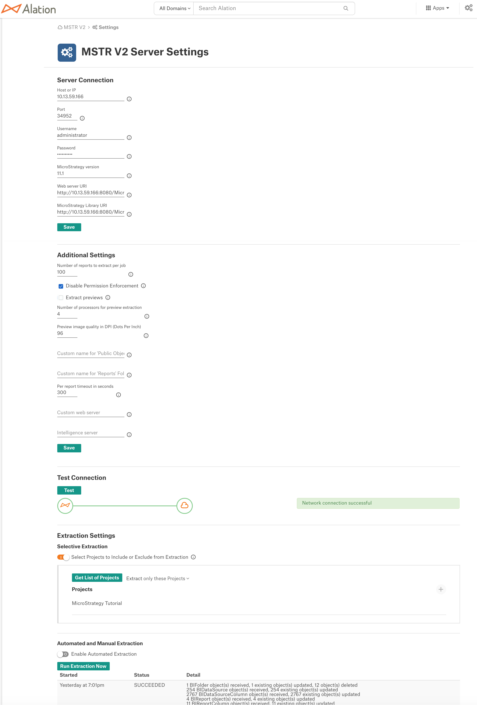
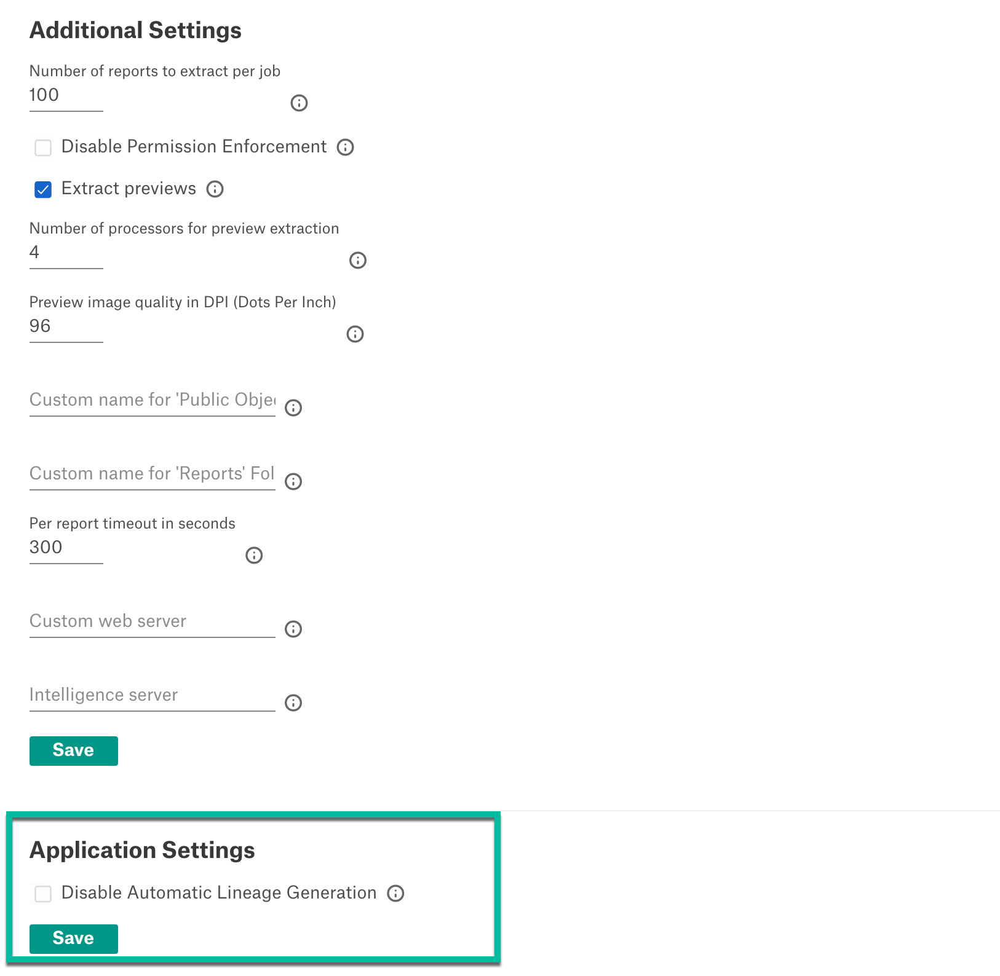
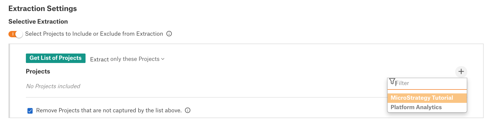

MicroStrategy¶
MicroStrategy as a BI source option is available in Alation by default. In releases prior to version 2020.3, no additional configuration is required to add MicroStrategy sources to the Catalog.
In version 2020.3 and newer versions, before adding a MicroStrategy BI source, enable the Generic BI Model V2 (GBM V2) for MicroStrategy sources by setting the alation_conf parameter alation.feature_flags.enable_mstr_for_gbm_v2 to True.
Feature Flag |
Should be |
|---|---|
alation.feature_flags.enable_mstr_for_gbm_v2 |
True (Default: False) |
See How To Set BI Tool Feature Flags for details on how to set the feature flags.
Generic BI Model V2 for MicroStrategy Sources¶
Applies from release 2020.3
The Generic BI Model V2 (GBM V2) is an improved framework for cataloging BI Server sources that is intended to provide more features and a better catalog user experience. From version 2020.3, new MicroStrategy server sources should be added to Alation using GBM V2.
Note
Note that after upgrading to version 2020.3 from previous releases, all MicroStrategy sources previously added on the Default BI framework remain fully functional. You can choose to migrate them to GBM V2. See Migrate a MicroStrategy Source Data to GBM V2 Framework below.
MicroStrategy sources on Default framework and on GBM V2 can be differentiated with their URLs:
https://<your_alation_URL>/bi/gbm/server/1/- the Default GBM frameworkhttps://<your_alation_URL>/bi/v2/server/2/- the GBM V2 framework
Extraction From a MicroStrategy Source¶
From version 2021.1.3, Alation uses MicroStrategy REST APIs available in the MicroStrategy Library in addition to MicroStrategy WebSDK and URL API to extract metadata from the Intelligence Server. As the result of extraction, the following MicroStrategy objects will be catalogued:

Projects
Published Cubes as Datasources
Note
Alation does not extract:
Unpublished Cubes and data objects built on unpublished Cubes
Datasource connection information
Attributes
Facts
Metrics
Prompted and unprompted Reports
Note
Alation user interface does not differentiate prompted and unprompted reports.
Dossiers
Documents
Report Attributes and Metrics
Preview images for Reports
User permissions information to enable Permission Mirroring
{kind=link}
Permission Mirroring¶
By default, Alation mirrors the object access permissions from MicroStrategy. This means that Alation users will only have access to those MicroStrategy objects in the Catalog that they are permitted to access on the Intelligence Server. Permission Mirroring can be disabled on the Settings page of the MicroStrategy source.
If Permission Mirroring is enabled, Alation will extract and store user permission information for each extracted metadata object. When an Alation user with a matching username accesses Catalog pages with MicroStrategy metadata, they will only see the objects they have permissions for on the Intelligence Server side. If the username of an Alation user does not match any username extracted from MicroStrategy, then this user will not be able to view extracted MicroStrategy objects in the Alation Catalog.
Preliminaries¶
The following information about your MicroStrategy server is required for the Alation Catalog:
Configuration information¶
Hostname or IP address of the MicroStrategy Intelligence Server
Port number (optional). Default is 34952.
Service Account with the following permissions:
READ on Projects, Project Folders, Reports, and Dashboards that need to be extracted
EXECUTE on Reports and Dashboards
READ access to read user permissions (for Permissions Mirroring)
From 2021.2: READ access to Governing Limits on the Intelligence Server:
DssXmlServerProjectMaxJobPerUserAccount
DssXmlServerProjectMaxJobPerUserConnection
DssXmlServerProjectMaxJobPerProject
Governing Limits are applied to limit the number of resources on the Intelligence Server that Alation will occupy during extraction
MicroStrategy version
Alation 2021.1.3 and newer releases: MicroStrategy Library must be enabled.
Library URL example: http://10.13.44.54:8080/MicroStrategyLibrary (do not use the trailing slash / at the end)
Note
To check that the MicroStrategy Library can be reached on your Intelligence Server, use the following URL: <YOUR_MSTR_SERVER_IP>:<PORT>/MicroStrategyLibrary/api-docs
Firewall Configuration¶
Open outbound TCP port to Intelligence Server, usually port 34952.
Alation should be able to forward resolve (from hostname to IP) and reverse lookup (from IP to hostname) for the Intelligence Server. In other words, the following two commands should work inside the Alation Shell.
nslookup [INTELLIGENCE_SERVER_HOSTNAME]nslookup [INTELLIGENCE_SERVER_IP_ADDRESS]
If any of the above commands fail, add an entry in the /etc/hosts on the Alation Server (on the host, NOT on the Alation shell) as follows:
INTELLIGENCE_SERVER_IP_ADDRESS INTELLIGENCE_SERVER_HOSTNAME
Note
Connectivity error information can be found in Taskserver logs at /opt/alation/site/logs/taskserver.log (path inside the Alation shell).
Add a MicroStrategy BI Source on GBM V2¶
Applies from release 2020.3
Enable GBM V2 for MicroStrategy¶
Set the alation_conf parameter alation.feature_flags.enable_mstr_for_gbm_v2 to True:
SSH to the Alation host.
Enter the Alation shell:
sudo /etc/init.d/alation shell
Set the flag:
alation_conf alation.feature_flags.enable_mstr_for_gbm_v2Restart Alation:
alation_supervisor restart all
Add a MicroStrategy Source on GBM V2¶
To a add a new MicroStrategy source,
Log in to Alation as an Admin who has permissions to add and configure Sources.
In the Apps menu on the main toolbar, click Sources to open the Sources age.
On the upper right, click Add and in the Add menu, click BI Server. The Register a Business Intelligence Server page will open.
Select MicroStrategy as the BI Server type.
Specify a Title and, optionally, a Description and click Add. The Settings page of the MicroStrategy source will open.
Under Server Connection, specify the required parameters.
Host or IP: hostname or IP of the Intelligence Server.
Port: default is 34952
MicroStrategy version
Click Save.
Under Additional Settings, specify the parameters for extraction. Click Save.
Parameter |
Description |
|---|---|
Host or IP |
Hostname or IP of the Intelligence Server. |
Port |
Default port is 34952. |
Username |
Username of the service account to be used to connect to the server. |
Password |
Password for the service account to be used to connect to the server. |
MicroStrategy version |
Version of your MicroStrategy server. This should be a version supported by Alation. |
Web server URI |
As a value, specify the base URI of the MicroStrategy web server. This URI points to the external .NET or Java web server. The endpoint can be:
Examples:
|
MicroStrategy Library URI |
The MicroStrategy Library URI. In the empty field, placeholder <hostname_or_ip> stands for the MicroStrategy iServer DNS Resolvable host address. This value is required for making RestAPI calls to the iServer. |
Number of reports to extract per job |
Specify the number of reports to create batches for extraction. Each extraction job reads the number of reports set by this parameter. Alation maintains a list of report identifiers. After an extraction job succeeds, the pointer is moved within the list, so that the next job can fetch the next batch of reports. Batches are processed until all objects have been extracted. |
Disable Permission Enforcement |
Permission enforcement is enabled by default in the GBM V2 framework. Select this checkbox to disable it. |
Extract Previews |
Select this check box to extract the previews in high resolution. Note that selection of this option can be demanding on your BI server resources. |
Number of processors for preview extraction |
Preview extraction can utilize a significant amount of CPU and memory resources. It is recommended to set this value to 50% of the total number of processors available to the JVM. |
Preview image quality in DPI |
A value of 96 DPI is usually sufficient. Lower DPI reduces image quality, and higher DPI may result in longer Extraction time. |
Custom name for ‘Public Objects’ |
Name of the folder containing all the public objects. If a custom name is used on your MicroStrategy server, specify it here. Leave this field empty to use the default name Public Objects. |
Custom name for ‘Reports’ folder |
Name of the folder containing all the reports. If a custom name is used on your MicroStrategy server, specify it here. Leave this field empty to use the default name Reports. |
Per report timeout in seconds |
Sets the timeout value for the metadata extraction job. The value limits the time that the extraction job will spend during the extraction of a single report. |
Custom web server |
Specify the web server URL in order to link reports, projects, and dashboards extracted to Alation to the source object pages on the MicroStrategy web server If this field is left blank, then users will be redirected to the source pages using the MicroStrategy Server URI provided on its Settings page > Server Connection. If a value is provided in the Custom web server field, then users are redirected to the Custom web server address. Do not use a trailing slash ‘/’ at the end of the Custom webserver URL. |
Intelligence server |
If a value is specified in this field, a parameter called “server” will be appended to the Custom web server URL along with the given value. This parameter is always used together with the Custom web server field value. If a value for the Custom web server field is not specified, then this value will be ignored. Changes made to this field will take effect only during the next extraction. |
From 2021.3: Under Application Settings, select the Disable Automatic Lineage Generation checkbox to skip the creation of automatic Lineage after extraction. Click Save. When automatic Lineage generation is disabled, during extraction Alation does not calculate Lineage data for this BI source.
For more information, see Disable Automatic Lineage Generation FAQ.
Under Test Connection, click Test to verify that connection to the MicroStrategy server can be established.
If required, configure Selective Extraction. See Selective Extraction From MicroStrategy.
If required, enable Automated Extraction under Automated and Manual Extraction: Schedule Extraction.
Click Run Extraction Now to perform extraction.
Upto 2021.2:
{kind=link}
From 2021.3:
{kind=link}
Examples for the Custom Web Server Field¶
Note
Add the http:// or https:// prefix at the beginning of the URL.
Do NOT use a trailing slash ‘/’ at the end of the Custom webserver URL. This will result in an erroneous link.
Changes made to the Custom web server field take effect after the next extraction.
Let’s assume that the value entered for the Custom web server is http://10.13.22.232:8080.
Then, if the Web server type is Java, MicroStrategy BI Source URL gets redirected to http://10.13.22.232:8080/MicroStrategy/servlet/mstrWeb?
A MicroStrategy Project URL gets redirected in the following way: http://10.13.29.171:8080/MicroStrategy/servlet/mstrWeb??evt=3010&Project=MicroStrategy%20Tutorial
A MicroStrategy Report URL gets redirected in the following way: http://10.13.29.171:8080/MicroStrategy/servlet/mstrWeb?evt=4001&src=mstrWeb.4001&reportID=13CFD83A458A68655A13CBA8D7C62CD5&Project=MicroStrategy%20Tutorial
Migrate a MicroStrategy Source Data to GBM V2 Framework¶
Applies from version 2020.3
After the update to 2020.3, the existing MicroStrategy sources can be migrated to GBM V2. During the migration, all the objects under this source are converted to the GBM V2 object model. Alation object IDs of the BI server object and its child objects are preserved, and no duplicate objects are created.
To migrate your existing MicroStrategy source to GBM V2,
Enable GBM V2 for MicroStrategy on your Alation instance: from the Alation shell, use the alation_conf command to set the parameter
alation.feature_flags.enable_mstr_for_gbm_v2toTrue:sudo /etc/init.d/alation shell alation_conf alation.feature_flags.enable_mstr_for_gbm_v2 -s True alation_supervisor restart all
To migrate the source, still in the Alation shell, change user to
alation:sudo su alation
Run the one-off migration script, substituting the placeholder values with real values:
<MSTR_source_id> - the ID of the MicroStrategy source that is being migrated to GBM V2:
python opt/alation/django/rosemeta/one_off_scripts/copy_mstr_gbmv1_logical_data_to_gbmv2.pyc -s <MSTR_source_id> --confirm
Example:
python opt/alation/django/rosemeta/one_off_scripts/copy_mstr_gbmv1_logical_data_to_gbmv2.pyc -s 1 --confirm
The migration moves the MicroStrategy BI source to the GBM V2 object model. All catalog data (field values, trust flags, stars, mentions) are preserved on the source as was.
Note
After the migration has been completed, the URL of the migrated source will change from <your_alation_URL>/bi/gbm/server/<id> to <your_alation_URL>/bi/v2/server/<id>.
The source on GBM V2 will use BI object templates associated with GBM V2.
Add MicroStrategy on Default Framework¶
Applies to versions before 2020.3
In releases before 2020.3, MicroStrategy sources are added on the Default framework.
Follow the instructions in Add a BI Server as a Source until you are on the BI server Settings page.
In the MicroStrategy version field, type the version of your MicroStrategy server. This field is available from version V R6 (5.10.x).
Under Server Connection, click Save.
Under Test Connection, click Test to validate connectivity to the source.
Under Extraction Settings, specify the parameters for extraction.
Parameter |
Description |
|---|---|
URI |
URI for the MicroStrategy Intelligence Server. Note that from version 2020.3, the HTTP(S) protocol prefix should not be added to this URI. |
Port |
Default port is 34952. |
Username |
Username of the Service Account to be used to connect to the server. |
Password |
Password for the Service Account to be used to connect to the server. |
MicroStrategy version |
Available from version V R6 (5.10.x) Version of your MicroStrategy server. Default framework supports versions 10.4 and 11.1. |
Number of Reports to Extract |
Specify the number of reports to create batches for extraction. Each extraction job reads the number of reports set by this parameter. Alation maintains a list of report identifiers. After an extraction job succeeds, the pointer is moved within the list, so that the next job can fetch the next batch of reports. Batches are processed until all objects have been extracted. |
Extract Previews |
Select this check box to extract the previews in high resolution. Note that selection of this option can be demanding on your BI server resources. |
Enable Permission Mirroring |
Permission mirroring is disabled by default in the Default framework. Select this checkbox to enable it. When selected, a user is permitted to only view those projects and reports for which they have permissions on the Intelligence Server. An admin user can see all projects and reports. |
Custom name for ‘Public Objects’ |
Name of the folder containing all the public objects. If a custom name is used on your MicroStrategy server, specify it here. Leave this field empty to use the default name Public Objects. |
Custom name for ‘Reports’ folder |
Name of the folder containing all the reports. If a custom name is used on your MicroStrategy server, specify it here. Leave this field empty to use the default name Reports. |
Alation data source IDs |
If the same databases from which the MicroStrategy server reads the data are cataloged in Alation, find their Alation data source IDs, include them and separate them by commas. This is necessary to retrieve lineage between database tables and MicroStrategy reports. |
Per-report timeout in seconds |
Available from version 5.8.x Sets the timeout value for the metadata extraction job. The value limits the time that the extraction job will spend during the extraction of a single report. |
Custom web server |
Available from version 5.8.x Configure the URLs that link reports, projects, and dashboards extracted to Alation to the source object pages on the MicroStrategy server. The Custom web server can be configured to support the HTTPS protocol. If this field is left blank, then users will be redirected to the source pages using the MicroStrategy Server URI provided on its Settings page > Server Connection. If a value is provided in the Custom web server field, then users are redirected to the Custom web server address.
|
Intelligence server |
Available from version 5.8.x If a value is specified in this field, a parameter named “server” will be appended to the Custom web server URL along with the given value. This parameter is always used together with the Custom web server field value. If a value for the Custom web server field is not specified, then this value will be ignored. Changes made to this field will take effect only during the next extraction. |
Webserver type
|
Available from version 5.8.x The available options are Active Server Pages and Java Server Pages. Select Active Server Pages when the web server is hosted on the Windows operating system. Example: Microsoft IIS. Select Java Server Pages when the Webserver is hosted on a Java server. Example: Tomcat. |
{kind=link}
If required, turn on Selective Extraction. For details, see Selective Extraction From MicroStrategy.
If required, enable Automated Extraction under Automated and Manual Extraction: Schedule Extraction.
Click Run Extraction Now to perform extraction.
Selective Extraction From MicroStrategy¶
In case you only need to catalog specific BI server objects (for example, specific Projects), toggle on the Selective Extraction option. After enabling it, select specific BI Projects to extract.
To configure selective extraction,
Toggle on the Selective Extraction switch under Extraction Settings. This will reveal more controls for this option.
Click Get List of Projects. This action fetches the list of all projects from the BI server that you can extract into the catalog. This action is logged in the Job Status table at the bottom of the page.
Note
Extraction uses the Service Account credentials specified in the Server Connection section of the Settings page. Alation can only fetch the list of Projects this Service Account has been granted access to on the Intelligence Server side.
Refresh the page to see the list of Projects that were fetched from the BI server. The page refresh will enable the Add icon on the right that allows for selecting specific projects.
Note
The Add button for Selective Extraction will remain inactive if:
Permission Mirroring is enabled and the logged in Alation admin does not have their credentials mirrored in MicroStrategy
The logged in admin performing the extraction does not have access to any Projects fetched from MicroStrategy.
In order to get the list of Projects, or perform a successful MDE, you can:
Create a user in MicroStrategy with credentials matching Alation admin’s credentials.
Disable Permission Mirroring by selecting the checkbox Disable Permission Enforcement under Additional Settings, save the configuration and refresh the page. Re-enable Permission Mirroring after extraction.
If the Add button still remains inactive, check the Service Account permissions on the Intelligence server side.
Make sure the extraction filter is set to the desired value:
All Projects except: Alation will extract all projects except projects specified by name.
Only these Projects: Alation will only extract the projects specified by name.
Click the Add icon on the right and from the list of fetched Projects, select Projects to extract or to exclude from extraction, depending on the extraction filter value you have set. The Projects you have selected will appear under Projects.
{kind=link}
{kind=link}
{kind=link}
From version 2021.2 Select the checkbox Remove Projects that are not captured by the list above if you wish to hide from the Catalog the previously extracted Projects that are not selected for the current extraction.
Click Run Extraction Now to extract metadata.